Гаврош
Безобидный, ласковый, трепетный. Очень ручной — он ни на шаг не отойдёт от вас. Хватается лапками за человека и держится. Такой милый и наивный пёсик, что очень жалеем его.
Узнать о ГаврошеЭти собаки ждут любящую семью. Может, именно вы — их человек?
Сейчас в приюте: …
Безобидный, ласковый, трепетный. Очень ручной — он ни на шаг не отойдёт от вас. Хватается лапками за человека и держится. Такой милый и наивный пёсик, что очень жалеем его.
Узнать о Гавроше
Да, она чёрненькая, но поверьте: такую не спутаешь ни с кем. Искрящиеся глазки, длинные ушки и фирменный хвост-вертолёт, который не устаёт размахивать от счастья.
Узнать о Гере
Несмотря на внушительную внешность, в нём таится нежность щенка. Он уравновешен, умён и очень послушен. Приучен ходить на поводке: не тянет, спокойно ждёт начала прогулки и идеально ведёт себя дома. Славик кастрирован.
Узнать о Славике
Невероятно преданная, отлично ходит на поводке, очень смышлёная, сообразительная, в меру активная. Такой хрупкой собаке, как Тельма, совсем не место в приюте.
Узнать о Тельме
Вечная девочка-подросток, энергии которой хватит на десяток собак! Она готова бегать и играть с волонтёрами до потери пульса. С появлением у вас Мухи вы ощутите эту детскую радость, непосредственность и искреннюю открытость в полной мере.
Узнать о Мухе
Как же любит общаться, на ручки прыгать, обниматься — это всё про неё! Задор и оптимизм у этой собаки неиссякаемый. Абсолютно социализированная, управляемая, воспитанная, коммуникабельная. Проживать с такой собакой — просто мечта!
Узнать о Соечке
Хорош собой, активен и умён. Среднего размера, вполне адекватный, идеально подойдёт для проживания в частном доме, в вольере. После скитаний и бед уличной жизни Арсик заслуживает самых добрых рук и преданных людей.
Узнать об Арсе
Этот рыжий мальчишка бесконечно улыбается. А мы глядим на него и не можем нарадоваться, что все его беды позади. Сейчас это очень весёлый товарищ, который бесконечно любит людей. На прогулке он стремится всех заобнимать.
Узнать о Шансе
Маленькая, трёхлапая собака с большим заветным желанием, которое может исполнить только волшебник, — получить себе немного смелости. Со знакомыми волонтёрами Людушка добрая, пугливая, но смышлёная девочка. Просто и быстро заполучить её в подружки не выйдет, но сколько вы потом получите радости от того, что сделаете одного робкого хвостика счастливым.
Узнать о Людочке
Ласковая, добрая и просто невероятная Тэффи мечтает об уютном доме. Она сама нежность, может часами обниматься с человеком. Спокойная, не суетливая, не лает по пустякам. Тэффи обожает всех: мужчин, женщин, детей, других животных.
Узнать о Тэффи
Вы давно мечтали о собаке, но не знали, о какой именно? Тогда советуем присмотреться к Талеру. Молодой, активный, позитивный и очень дружелюбный. Парень чистокровный дворянин, но очень похож на маленькую лаечку.
Узнать о Талере
Увидев Азалию, вы сразу будете ею очарованы. Она сама нежность, к рукам человека так и льнёт. Ей всё время хочется быть в центре внимания, чтобы её гладили и хвалили. Она энерджайзер, юркая, ловкая.
Узнать об Азалии
Сандра у нас не самая уверенная в себе собака, но зато очень нежная и трогательная. Такая она вся беззащитная и безобидная. А из-за красивой шёрстки похожа на медвежонка.
Узнать о Сандре
Долго думали, какого же цвета у нас Тимошка. Вроде не рыжего, но и не бежевого. Потом поняли — а он ведь жёлтенький, как солнышко. Он и правда такой — тёплый, добрый и очень милый. Бодр, полон сил, привлекателен и лицом, и фигурой.
Узнать о Тимошке
Девочка одна из тех, кто умеет на прогулках грозно и страшно лаять на незнакомцев — будет превосходной охранницей! Очень ласковая, не капризная, послушная, любит побегать и поиграть. К другим собакам относится адекватно.
Узнать о Румбе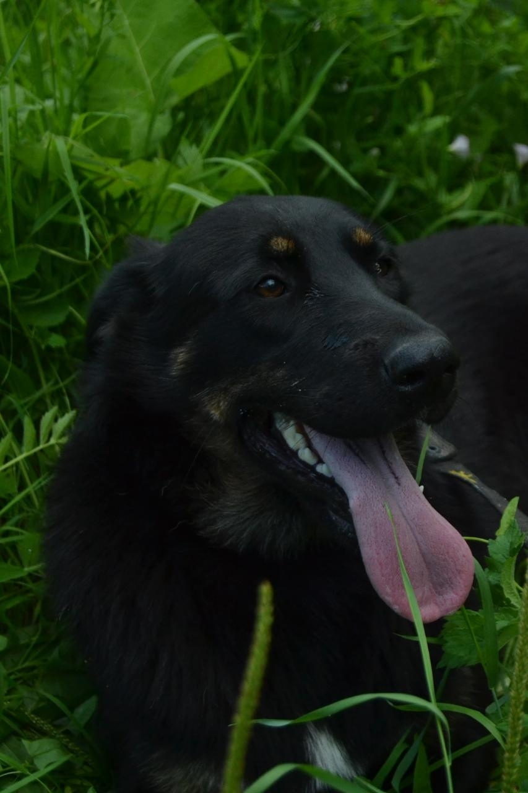
Скромная и застенчивая на первый взгляд, а на самом деле — настоящая собака мечты: ласковая, доверчивая и очень игривая. С детства сохранила милую привычку сразу ложиться и подставлять пузико при встрече на прогулке. С другими животными живёт в полной идиллии — обожает резвиться с сестрёнкой и братишкой.
Узнать об Асти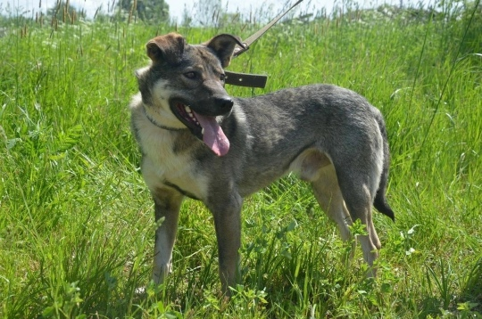
Мальчик очень верный и преданный, у него бездонные глаза, которыми он буквально смотрит в самое сердце! Барс ласковый пёс и бесконечно добрый, очень спокойный и ненавязчивый. При встрече может показаться немного зажатым, но на самом деле он просто чересчур интеллигентный и тактичный молодой человек.
Узнать о Барсе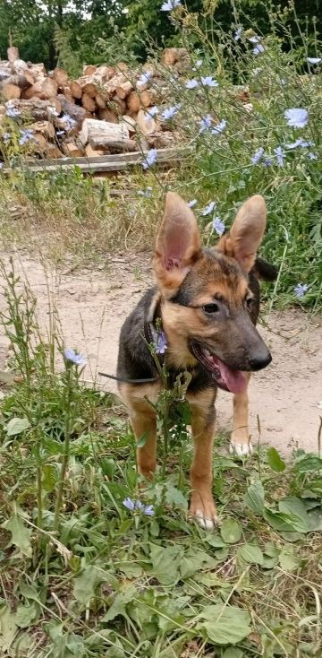
В Мэнди будто живёт дух настоящей служебной собаки — она всё замечает, ничего не пропускает, моментально реагирует на любой шорох и будто внутренне всегда готова к важному заданию: хоть след брать, хоть тапочки приносить, хоть просто бдительно охранять кусочек вашего счастья.
Узнать о Мэнди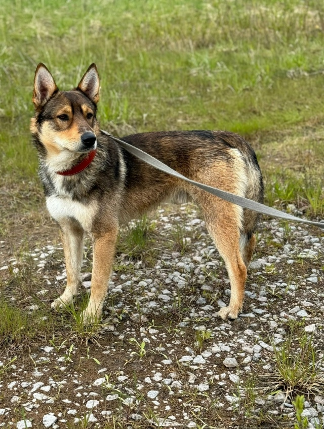
Нашему Лосяшику годик! Благодаря случившейся с ним беде он попал в приют и выжил — и целый год смешит и радует всех вокруг. Маленьким его уже не назовёшь: из щенка, умещавшегося в кошачью клетку, вымахал самый настоящий Лосяш.
Узнать о Лосяшике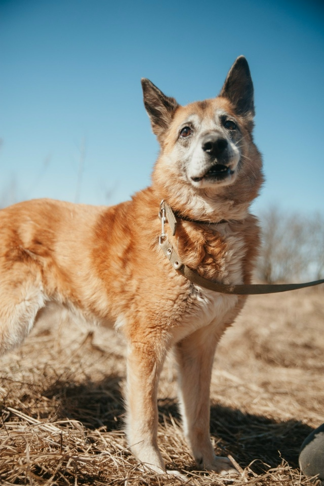
Почти 6 лет Альма мечтает стать кому-то нужной. Раньше у неё был хозяин, но тогда она была совсем молодой и плохо помнит то время. Потом скиталась, жила на дачах, её иногда кормили хорошие люди, но никто из них не захотел стать её Хозяином.
Узнать об Альме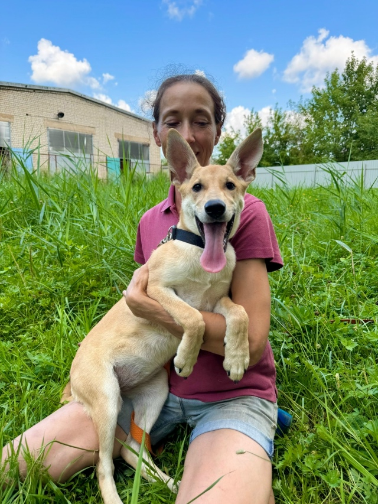
Анфиска — ещё ребёнок: ласковая, добрая, позитивная и активная. Смелая — ничего не боится. Как и все дети, любит бегать и играть, любит всех вокруг — и людей, и собак. Так что легко вольётся в любую семью и любую компанию.
Узнать об Анфиске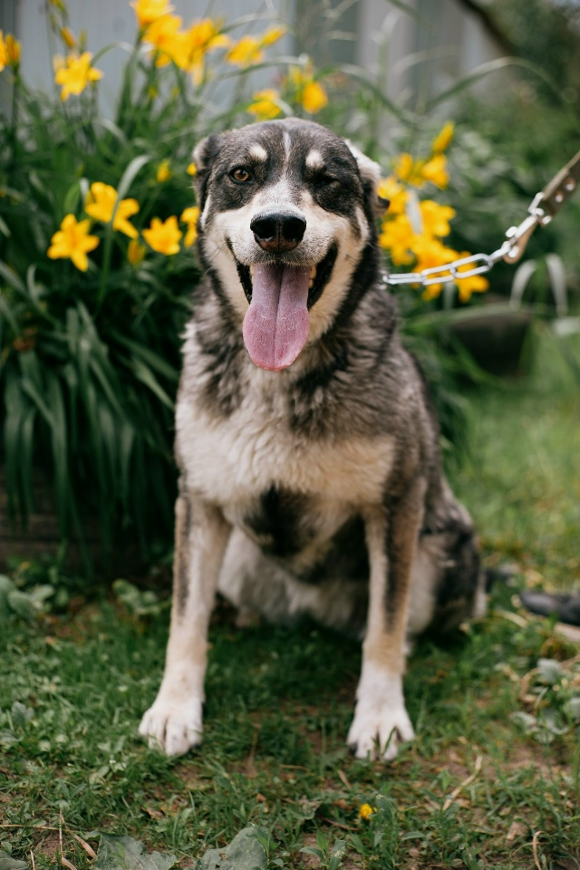
Ладога родилась без одного глазика и ушка, но это не помешало ей вырасти в сильную, красивую и заводную собаку. Когда её берут на прогулку, она прыгает и носится от радости. Энергичная и активная, с собаками избирательна — но если выберет себе друзей, будет бегать с ними без остановки. Умная, сообразительная, очень преданная.
Узнать о Ладоге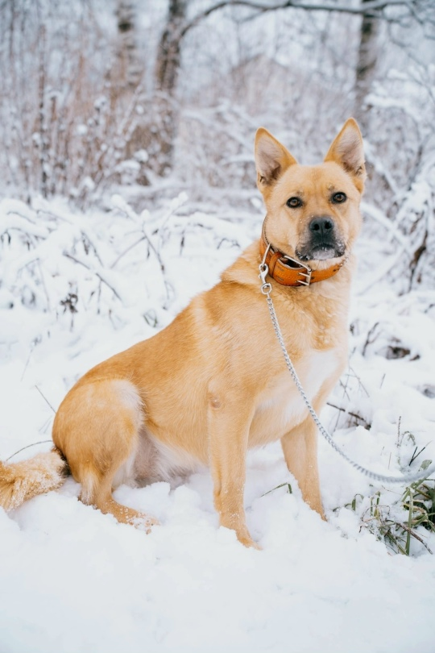
Золотинка — настоящая красавица с человеческим взглядом. Крепкая, статная, она сразу привлекает внимание, но при этом остаётся трусишкой, несмотря на свои внушительные размеры. Попав в приют подростком, Золотка прошла долгий путь, чтобы социализироваться — она всё ещё осторожна с незнакомыми, но прогресс у неё просто огромный.
Узнать о Золотинке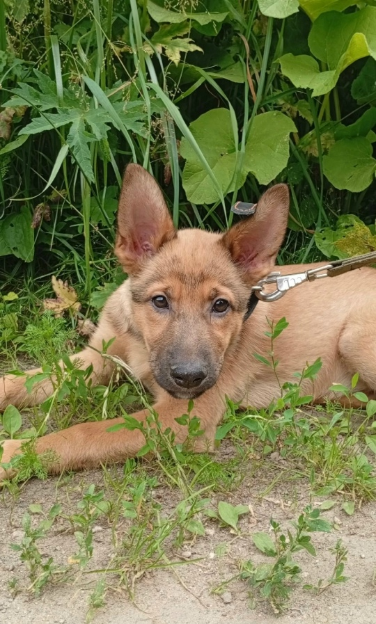
Кокосинка не из тех, кто будет тихо сидеть в уголке. Ей нужно бегать, прыгать, выяснять, что там шуршит, и обязательно побеждать в каждой щенячьей баталии. С такой девчонкой точно не заскучаешь — каждый день будет маленьким приключением.
Узнать о Кокосинке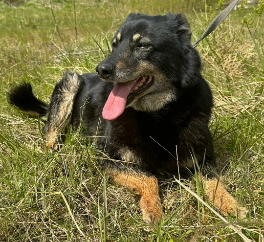
Валенсия очень ласковая девочка и настоящая душа компании! У неё большое, доброе и открытое для всех сердце. Валя-Валенсия отлично ладит с собратьями, всегда готова пообщаться с людьми — невозможно пройти мимо, чтобы не обняться с этим милым ребёнком!
Узнать о Валенсии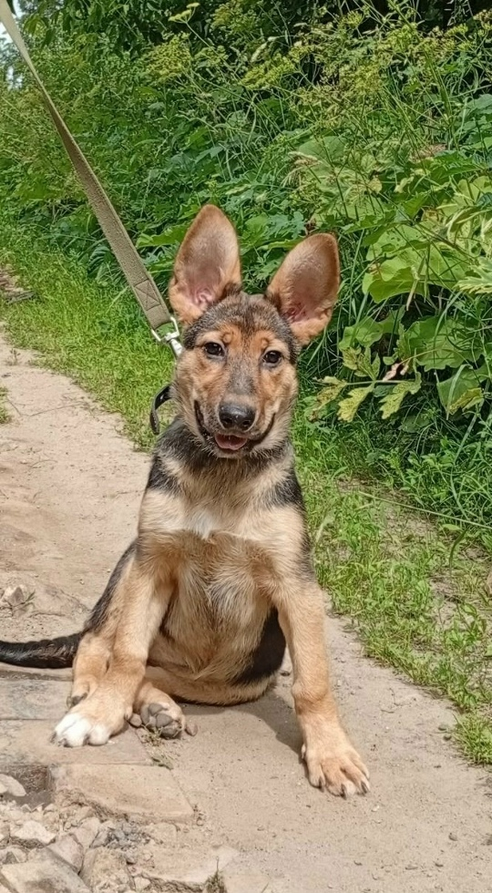
Знакомьтесь, это наша Тыквочка! Очень милая, забавная девчушка. А большие ушки нужны ей для того, чтобы не пропустить самое главное в жизни любого приютского щеночка — звук шагов его будущих родителей. Тыквочка будто каждую секунду ловит звуки будущего счастья, которое вот-вот случится.
Узнать о Тыквочке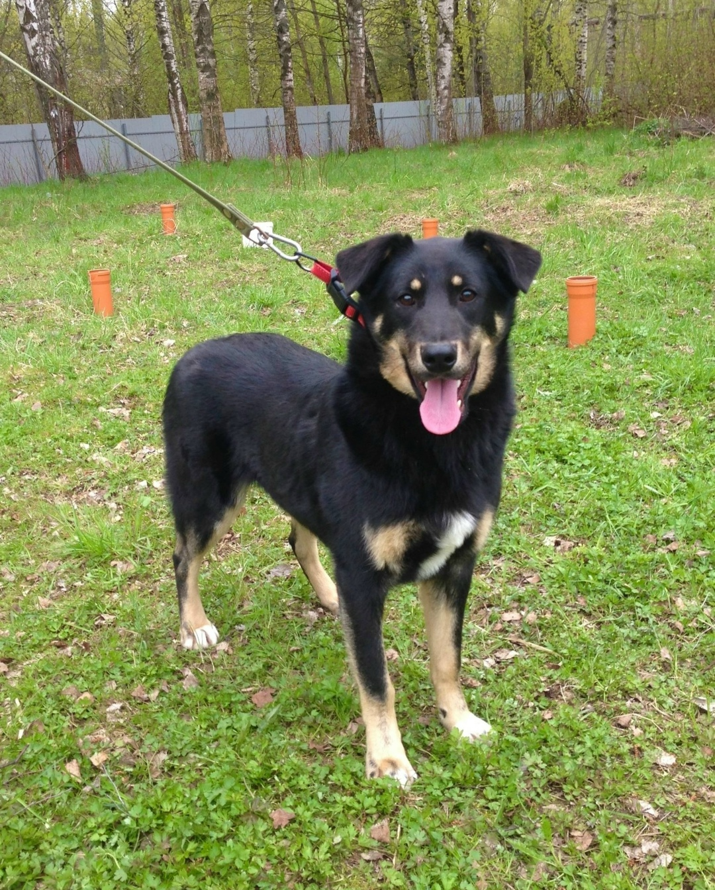
Из маленького клубочка-комочка Амир превратился в стройного и гармонично сложенного юношу. Он дружелюбен ко всем, легко вливается в игру с сородичами. К незнакомым людям ему нужно немного привыкнуть, а со своими он чувствует себя свободно и спокойно.
Узнать об Амире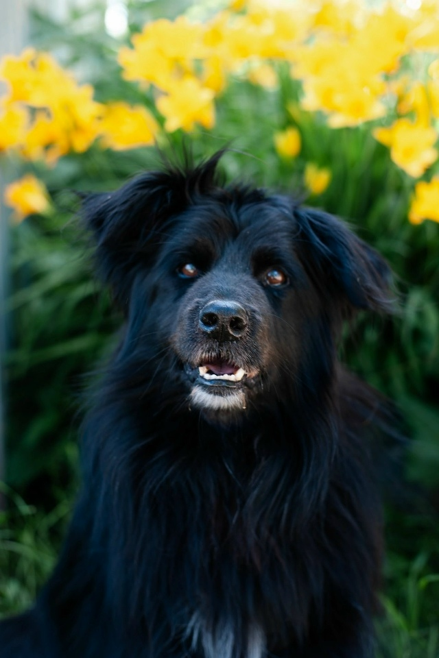
Живёт в приюте с 2014 года. Пёс идеальный — ему бы уголок вашего дома и хоть ещё пожить в настоящей семье, чтобы постоянно гуляли и гладили. Ведь возраст — это просто цифра в собачьем паспорте.
Узнать о Лапусе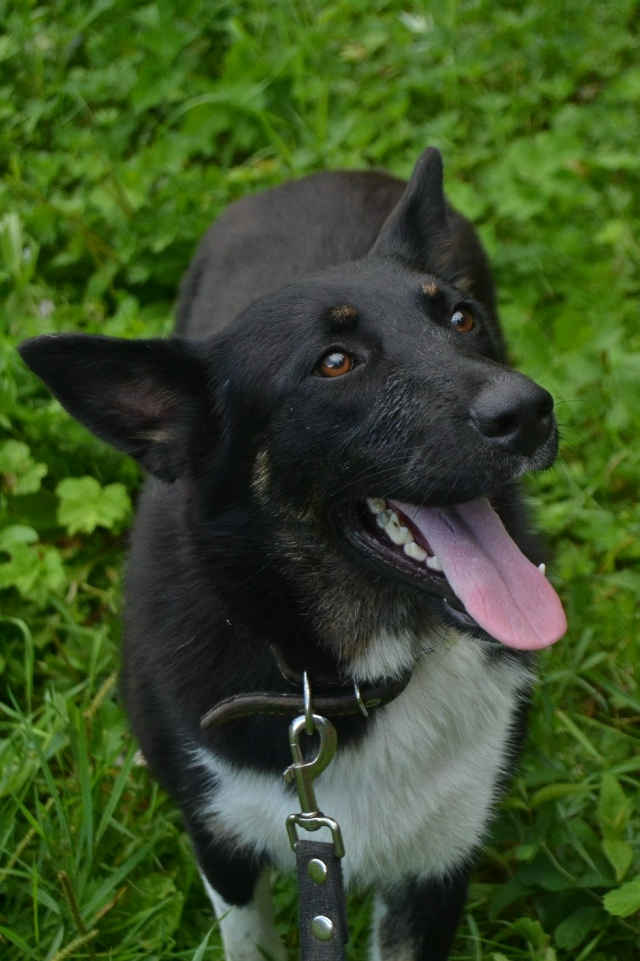
Кайли совсем молоденькая. Она душа компании, очень любит внимание и ласку. С теми, кого знает, хорошо идёт на контакт — дружелюбная и игривая, ей всё интересно и всё любопытно. Отлично ладит и с людьми, и с животными. Не задира, не врединка — собака с хорошим и спокойным характером.
Узнать о Кайли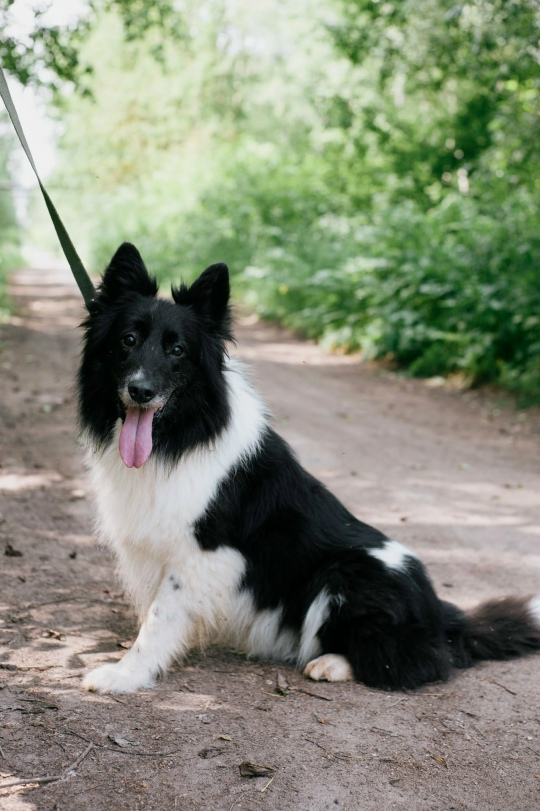
Скажем честно: Сержулька уже не мальчик, годы идут. Но внутри он всё тот же щенок — наивный, трогательный, беззащитный. Он по-прежнему тянется к человеку и просится на ручки, как будто всё ещё ждёт, что кто-то однажды скажет: «Ты мой».
Узнать о Сержульке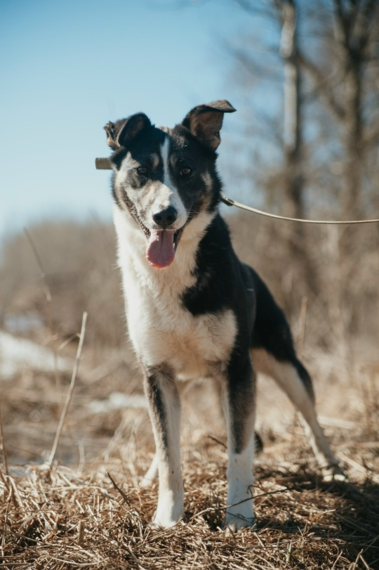
С виду эта девочка очень большая, как медвежонок! Но в ней скрывается самый наивный и добродушный ребёнок. Голубка такая безобидная великанша — использует свою силищу только во время игр, поэтому все собаки разбегаются от неё. Неукротимая, заводная девочка.
Узнать о Голубке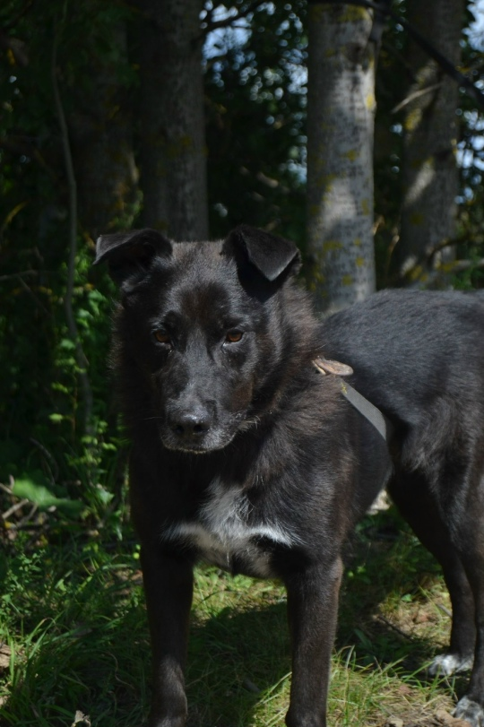
Пёс Чёрный — из числа крупных представителей нашего приюта. Статный, хорошо сложенный, с отличной выправкой. Времена, когда парень был диковат, давно прошли: он отлично ходит на поводке, хорошо ладит с другими собаками, в вольере ничего не портит. Любит купаться в любую погоду.
Узнать о Чёрном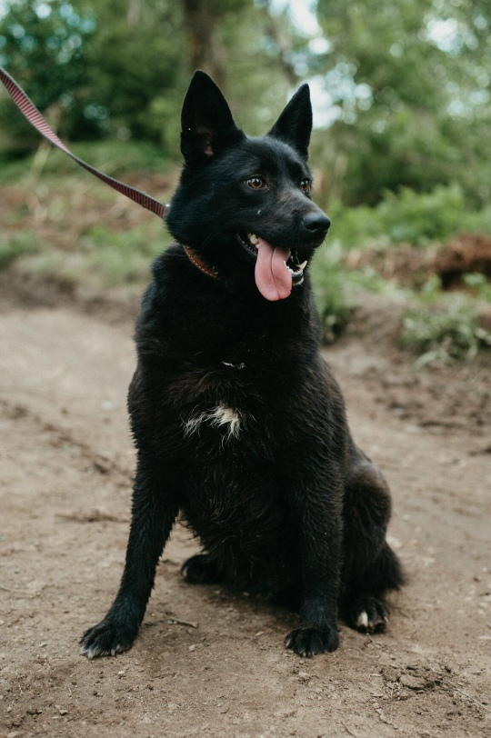
Капелька — чудесная, добрая, скромная малышка с очаровательными янтарными глазками и маленькими ушками. Фигура у неё очень ладненькая, а сама она совсем низенькая. Здорова, стерилизована и привита (есть паспорт). С чужими людьми поначалу стесняется, но проходит время — и при встрече она уже готова запрыгнуть на ручки.
Узнать о Капельке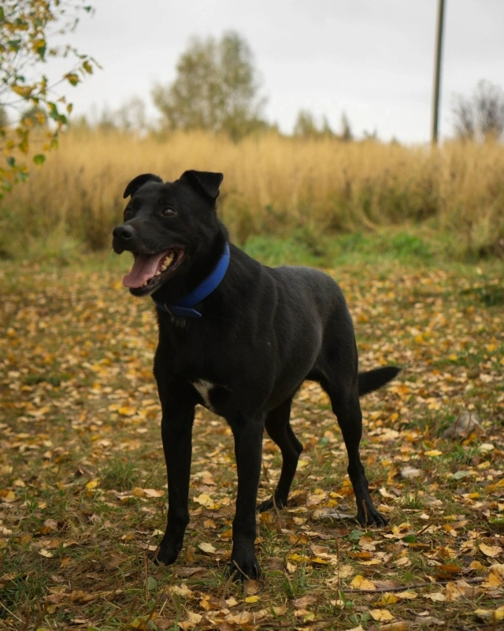
Обладатель такого серьёзного имени совсем не отличается серьёзным видом. Валера у нас низенький, худенький, тонкой душевной организации мальчик. Не хулиган, не забияка, не бегун — а очень добрый и нежный. Ходит всегда рядышком, спокойно. Мечта любой женщины!
Узнать о Валере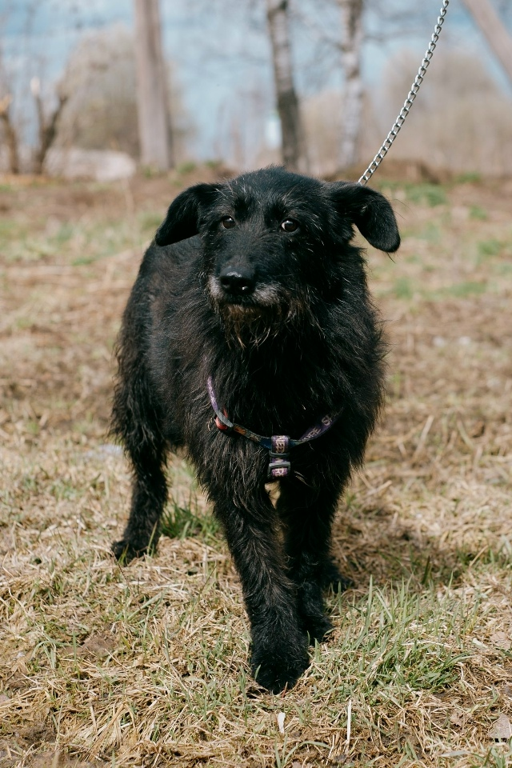
Бородатая уютная Моника в приюте прошла путь от боязливой до идеальной собаки на выгуле. Умная и добрая, но всё ещё осторожная к незнакомым — родилась на улице, от людей мало хорошего видела. С большим удовольствием гуляет, носится и ходит на поводке, научилась радоваться людям и прогулкам.
Узнать о Монике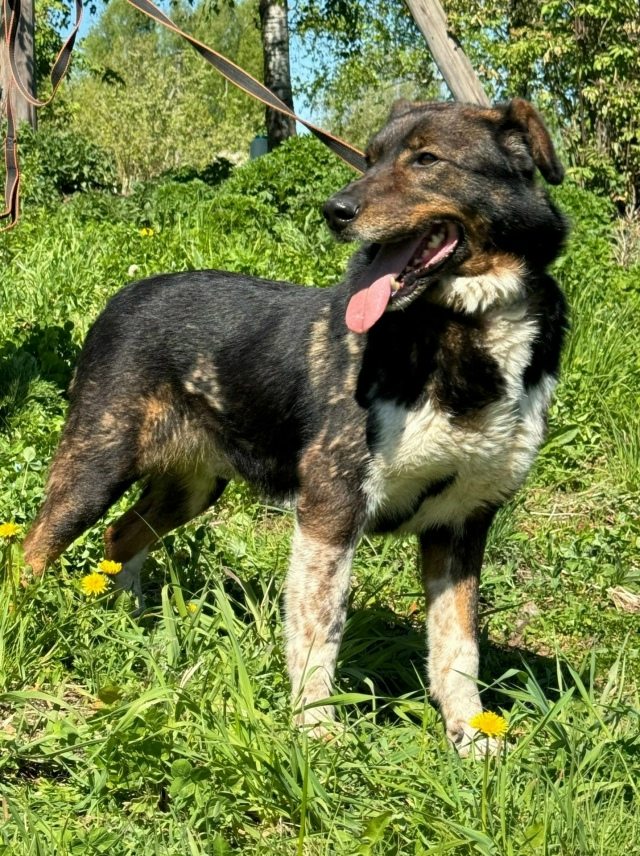
Молодой крупный Рекс — очень доверчивый, нежный, спокойный пёс, просто находка! Обладает внушительной внешностью, но абсолютно плюшевый внутри. Со своей любовью и лаской навязываться не будет — у Рекса всё очень степенно и воспитанно.
Узнать о Рексе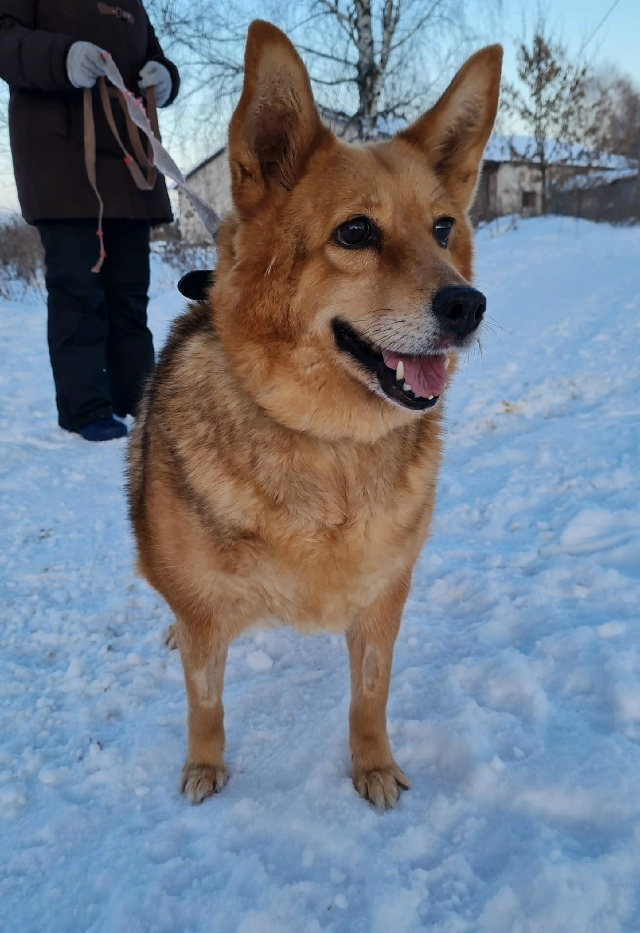
Груне был вынесен жестокий приговор «не нужна» после смерти хозяйки — желающих взять собаку себе не нашлось, и её просто выставили на улицу. Весёлая толстушка, простая и улыбчивая, несмотря ни на что доверчивая к людям, со смешными зубками врастопырку и большими влажными карими глазками. Грунюшка очень харизматична.
Узнать о Груне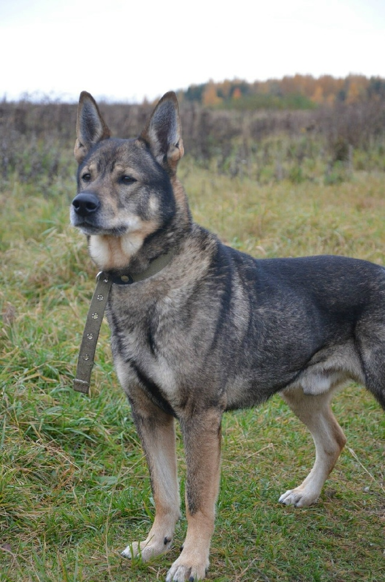
Каспий в приюте давно. В вольере сидеть не любит, ему бы в люди выходить. Мордашка у него всегда улыбчивая, настроение на высоте — как же любит он размяться и подышать свежим воздухом! Из грустного бирюка сразу преображается в энергичного телёнка, когда видит волонтёров.
Узнать о Каспии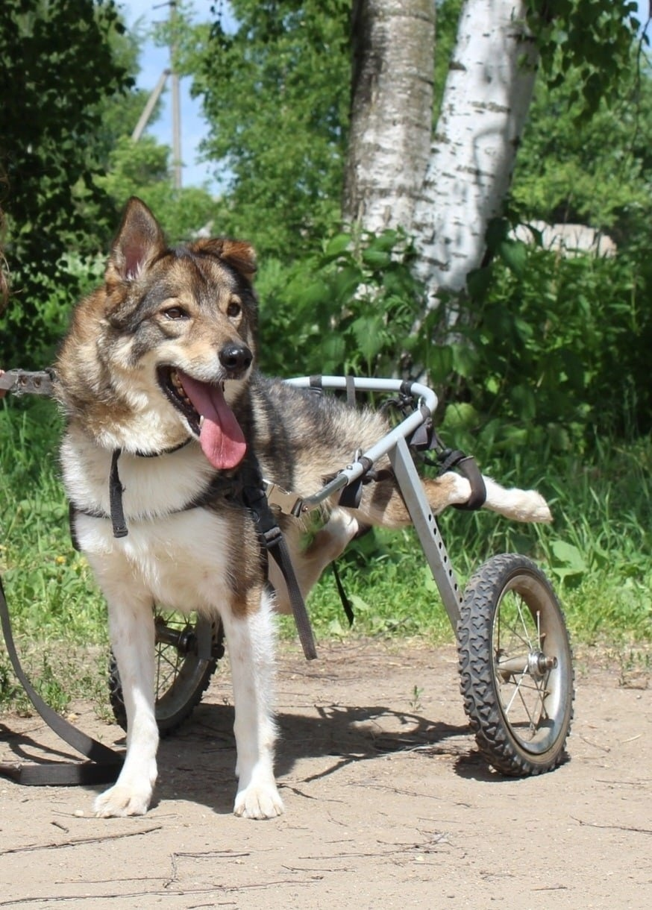
Парень очень активный и безбашенный — побежит, споткнётся о кочку, перевернётся, поползёт дальше, волонтёры бегут на помощь, а он — «не поднимайте меня, всё по плану!». Это две лапы и два колеса забиячества и искренней детской радости. Очень позитивный и весёлый, при этом невероятно ласковый.
Узнать о Фарте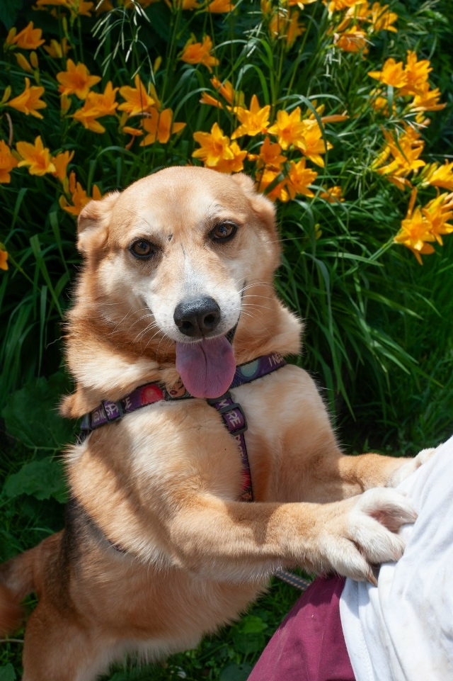
Не зря её так назвали — невозможно ласковая девочка, кажется, ещё немного и замурчала бы от нежности, если бы могла. Красивая лисичка, умная, игривая и очень-очень контактная, готова во всём следовать за человеком. В приюте живёт уже очень давно, но свой чудесный характер за это время не растеряла.
Узнать о Мурке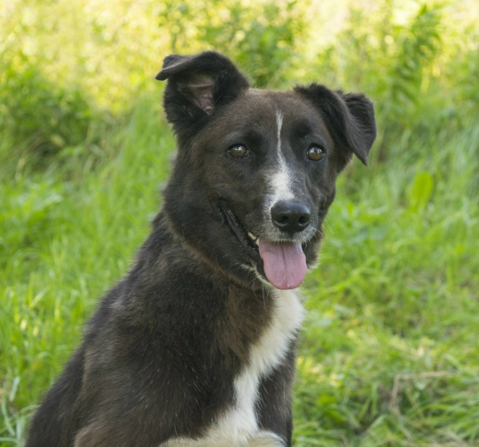
Вот такая фигуристая барышня выросла из трогательной плюшевой малышки. Неповторимая танцующая походка, красивые лежачие позы, которые принимает Кармен, заставляют обращать на неё внимание и удивляться, какие эта скромница таит в себе благородные манеры. К сожалению, Кармен не обладает бойким характером — она скромна и стеснительна.
Узнать о Кармен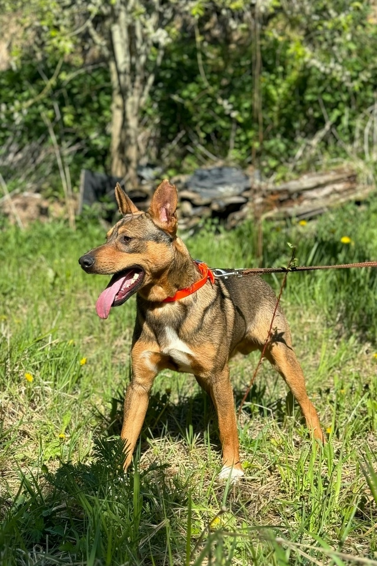
Ах, ну до чего же хорош этот ладненький чертяка! Это нереально ласковый мальчишка, жизнерадостный и открытый, который просто задыхается от радости, когда кладёт лапки на плечи и ищет глазами ваши глаза. Ах, эти глаза чайного цвета — наивные и ждущие, полные надежды…
Узнать о Танго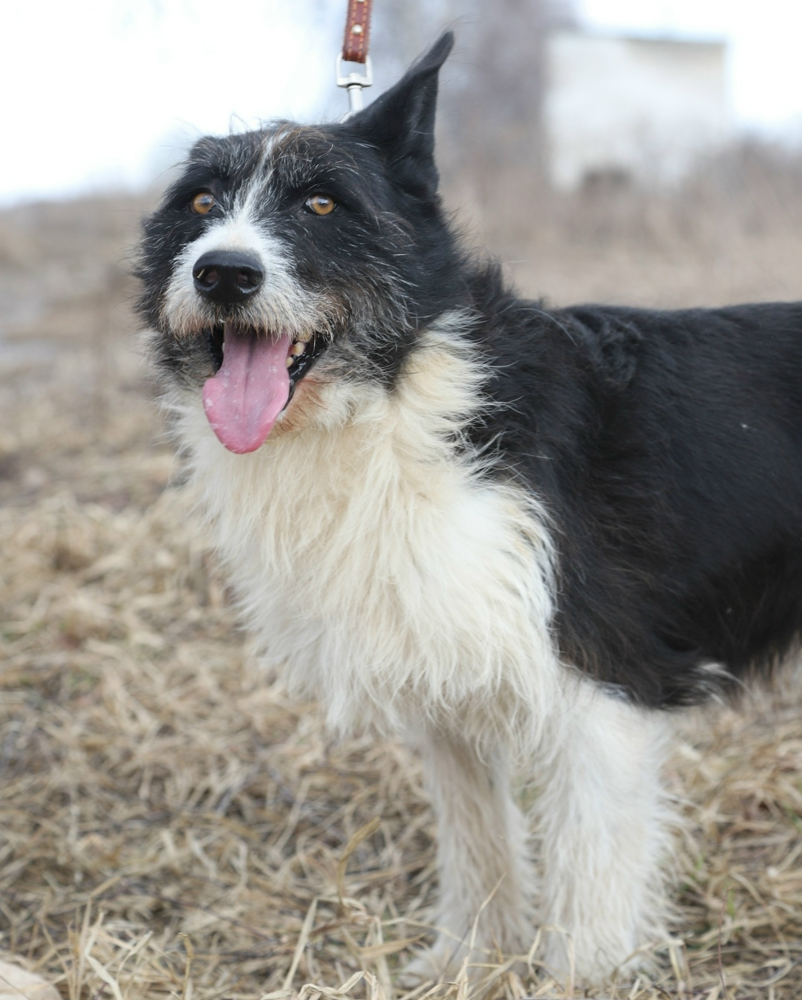
Тихон хорош собой, бородат. Обладает отличным аппетитом и активной жизненной позицией — всех девчонок на прогулке проверит, сам себя на поводке поводит. До сих пор Тиша немного боится всего: хоть он и большой, но очень беззащитный, и совсем не охранник, а настоящий лучший друг — преданный и ласковый. Мы очень любим Тишу за то, что он ведёт себя безобидно, как щенок, — такой уж он дурашливый, шебутной, но сладкий мальчишка.
Узнать о Тихоне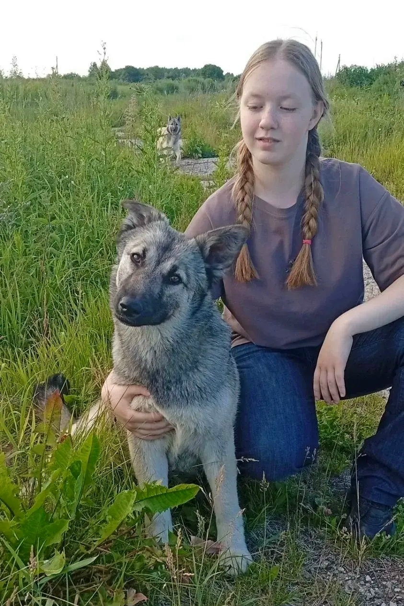
Эта девчушка-веселушка — наша Медея. У неё никогда не бывает плохого настроения. Медея-подросток, и, как и все дети, она активна, позитивна, бодра и весела. Природа подарила ей роскошную шубку — Медея невысокая в холке, коренастая, и вся такая плюшевая и уютная.
Узнать о Медее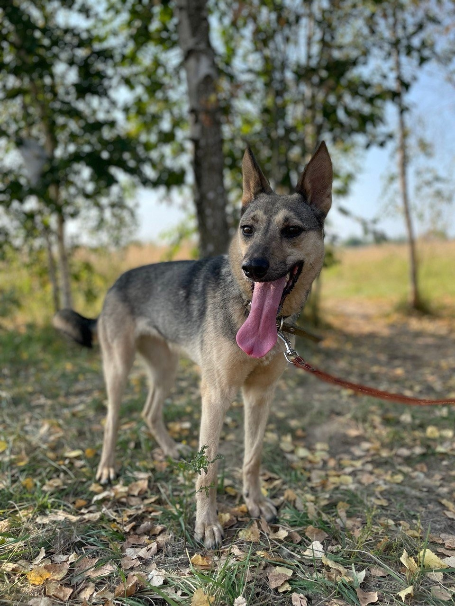
Тигра — девочка с выдающимися ушами и непростым характером. Уши у неё такие большие, что в детстве она улавливала ими малейший звук и при любом шорохе бросалась бежать, да и к рукам волонтёров относилась с большим недоверием. Но повзрослела, стала послушнее и спокойнее, с большой радостью бежит гулять и общаться. Точно оправдывает своё имя — уж такая бесстрашная телохранительница.
Узнать о Тигре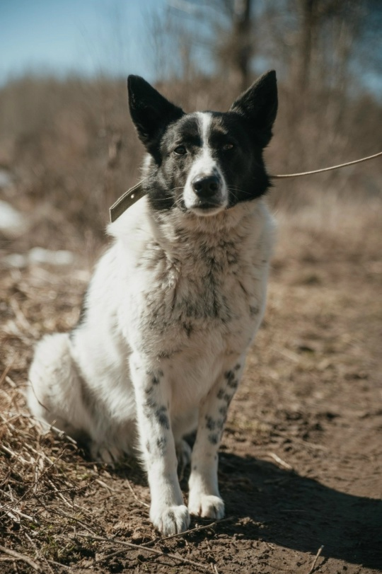
Малышка Луиза полностью ориентирована на человека, всё понимает, ласкается, но при этом ненавязчивая и скромная в общении с новыми людьми. Ну, а какая она красивая! Шумная компания и большая семья не для неё — она сможет стать настоящим центром вселенной для единственной любимой хозяйки.
Узнать о Луизе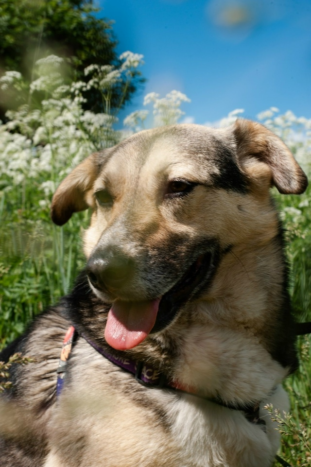
Милая Нежна — девочка, которая всегда ходит рядом. Очень умная и послушная собака, старается всегда угодить человеку. Перед прогулкой спокойно ждёт, пока на неё наденут ошейник и поводок. Дружит со всеми собаками, тихая и незаметная, всё понимает с полуслова. Красивая, молодая — отлично подойдёт второй собакой.
Узнать о Нежне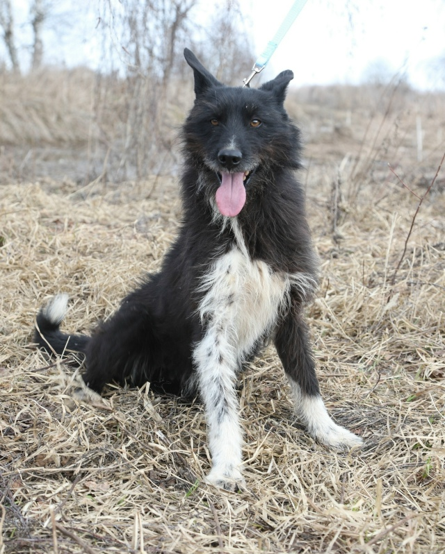
Когда смотришь на Робина, так и расплываешься в улыбке от умиления. Этот большой бородатый пес на самом деле еще тот шустрый попрыгунчик. Жизнерадостный и любопытный, в меру активный, в меру пугливый. Робин, конечно, уже не щенок, но все еще очень добрый, наивный, ласковый ребенок.
Узнать о Робине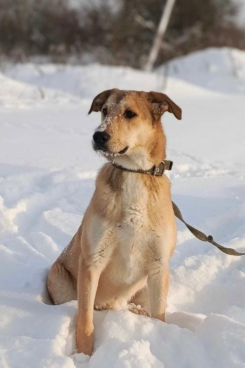
Это молоденький и веселый мальчишка, которому все интересно и все любопытно. Веселый, невероятно добрый, скромняга. Ни в какие разборки никогда не полезет, слушает и понимает все с полуслова. Молод и красив. В приюте прослыл исключительно замечательным мальчишкой! Ласковый малый, любит играть с сородичами, рядом с ними всегда раскрывается.
Узнать о Златане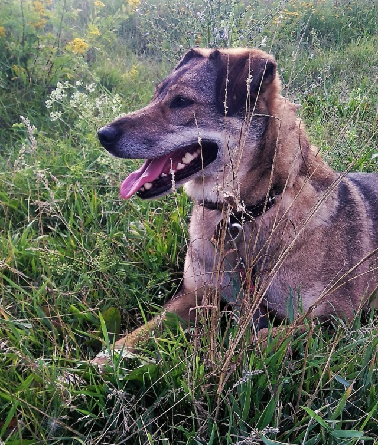
Умная и независимая собака. Никак не подумаешь, что под этой скромной и мягкой внешностью скрывается сильная натура. Героиня в самом расцвете лет, хороша собой и знает себе цену. И вообще она дама серьёзная — «сколотила» свою стаю и установила в ней жёсткий матриархат.
Узнать о Героине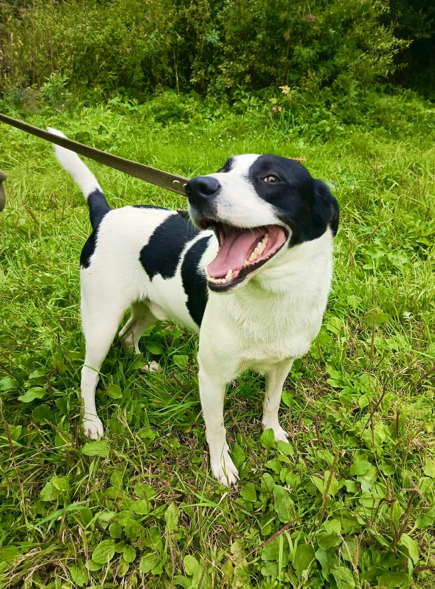
Этот замечательный пушистый друг с лёгкостью вольётся в любую семью. Он очень контактный товарищ, настоящий компаньон, невероятно любит людей, дружелюбен ко всем! Любит обниматься, играть. Обучаем, с лёгкостью усваивает команды. Идеально подходит для содержания в квартире, приучен к выгулу. Хорошо ходит на поводке.
Узнать о Бонде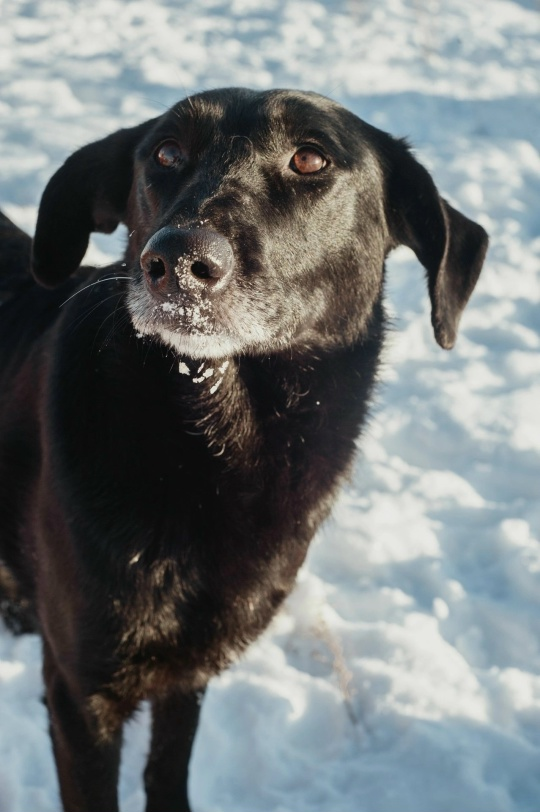
Как мало надо песам для счастья — чешут пузико, значит, день удался! Жалко, что массажики делают только по выходным. Вот был бы свой собственный человек и гладил бы каждый день. Все наши собаки мечтают стать нужными для своего главного человека, а такие как Стрелка — совсем стесняшки — ещё больше.
Узнать о Стрелке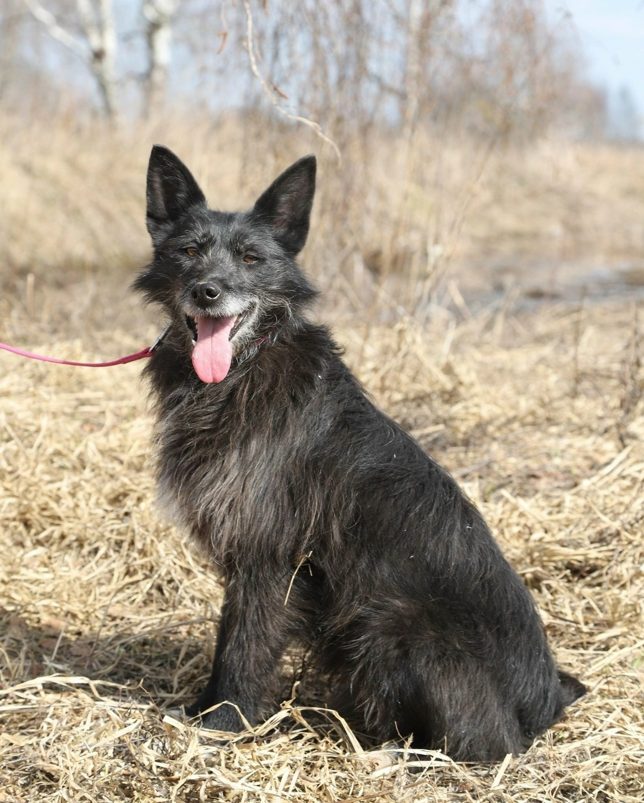
Дафна, ну очень прелестная девочка. Лохматая, улыбчивая, ласковая! Только вот её чрезмерная осторожность в общении с людьми делает поиск семьи сложной задачей. Этакая она стесняшка-обаяшка. С ней придётся набраться терпения и не бояться трудностей. Но эта бородатая мордашка этого заслуживает. Дафна отлично подойдёт второй собакой в семью — она любит брать пример с более смелых собак.
Узнать о Дафне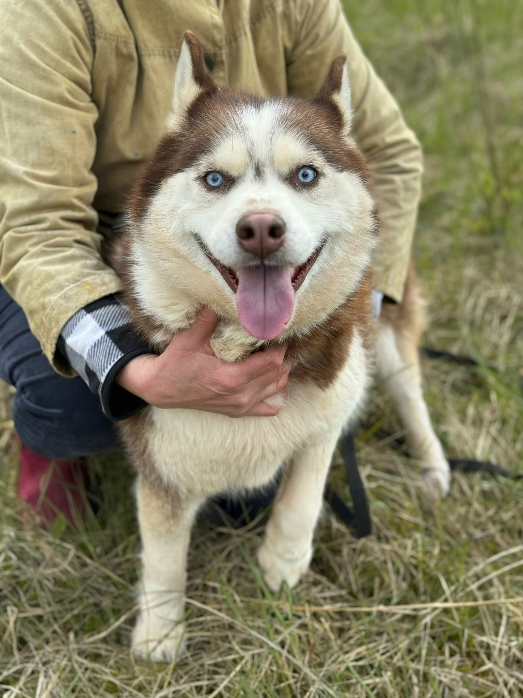
Сакура (по паспорту Акира), как настоящая японка, отличается высоким интеллектом, послушанием и организованностью. Коммуникабельная, добрая, смышлёная девочка необыкновенной красоты и обаяния готова быть с вами рядом и наполнять вашу жизнь радостью бытия: вместе с вами слушать весенние трели соловья, валяться в пушистом снегу, шуршать опавшими листьями и бултыхаться в тёплой речке. Мегапозитивная, заводная и активная молодая мадам.
Узнать о Сакуре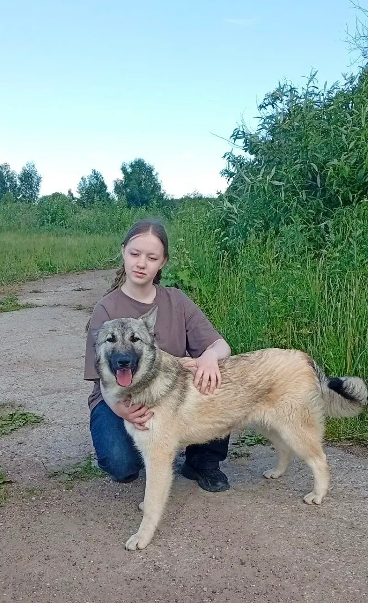
Карп. Мальчик умный и в хороших руках станет прекрасным псом. Пока он ещё подросток, но уже невероятно красив, быстр и хорошо сложен. Будет рад долгим прогулкам и играм. В нём море энергии, и он готов её тратить. Ищем для него родителей, которым будет в радость заниматься с собакой и посвящать ей своё время.
Узнать о Карпе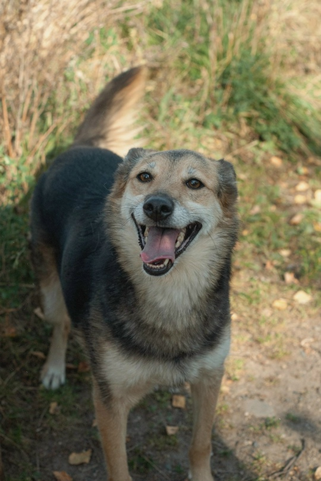
Её 5 друзей (братьев и сестричек) уже давно дома, а Ива задержалась и всё ещё ждёт своего человека. Возможно, дело в её скромности и осторожности — она никогда сама не подбежит к незнакомому человеку. Но надо просто познакомиться поближе — несколько свиданий и вкусняшки всё исправят! И тогда вы увидите, какая это умная, активная и жизнерадостная собака.
Узнать об Иве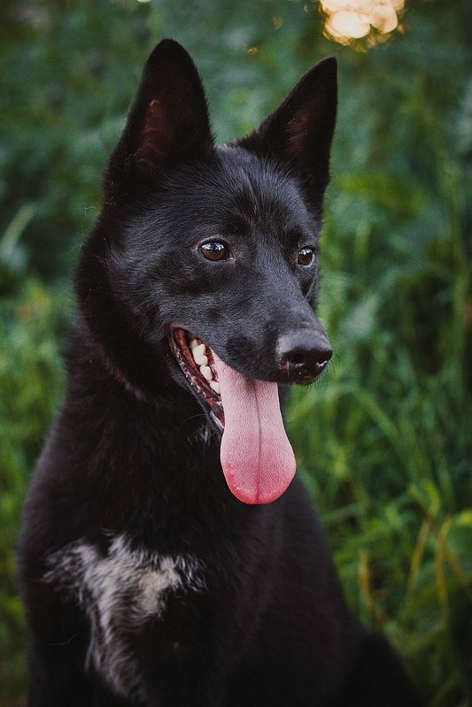
Скучать никому не позволено! Компактная и аккуратная, но в то же время яркая барышня. Характер задорный, девчушка любвеобильная и нежная. Привита, стерилизована. Хорошо ходит на поводке. Очень ласковая, ориентирована на человека, наполнит ваш дом радостью и дружелюбием.
Узнать о Жульке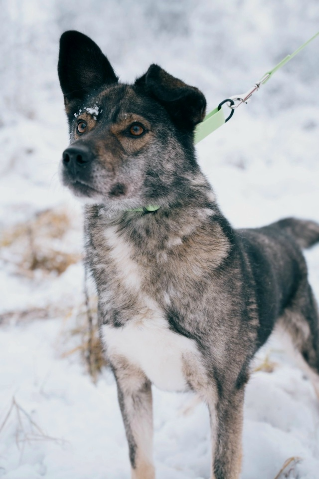
Казбек — чудесная собака с обаянием, которое покоряет с первого взгляда. Несмотря на свою серьёзную внешность, он обожает ласку и внимание. Стоит взять его на прогулку, как он тут же бросается к вам, стараясь лизнуть в лицо, словно говорит: «Спасибо, что ты рядом!» Ему важно чувствовать тепло и заботу человека. Он активный, но в меру — прогулка помогает ему выплеснуть энергию, после чего он спокойно идёт рядом.
Узнать о Казбеке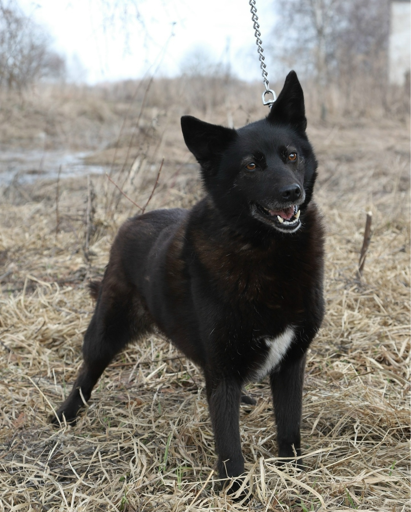
Телом Рита совсем обыкновенная собака, но глаза! Они у неё удивительные, так по-человечески она может смотреть ими. В них всегда детский восторг и большая радость. Очень добрая и любознательная девочка, которая изучает тщательно каждый новый уголок на прогулке. Мордочка у Риты уже поседевшая, но энергии ещё ого-го. Эта бесконфликтная и мудрая девочка давненько живёт в приюте и очень хочет домой!
Узнать о Рите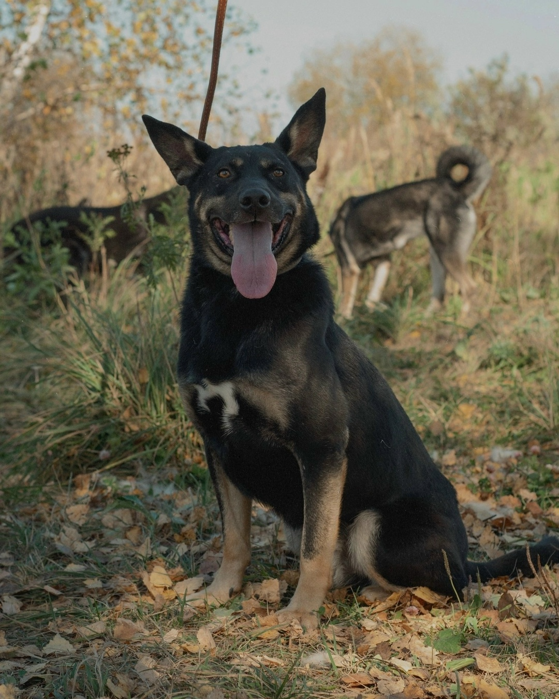
Есть у нас в приюте такой мечтательный романтик с медовыми глазками и забавными ушками! Смешной, добрый и по-щенячьи трогательный. Скуби очень бы хотел, чтобы такие же чуткие и нежные люди уже приехали наконец к нему на знакомство, потому что он создан для жизни в семье. Характер у него чудесный, спокойный — он будет очень рад пообщаться с новыми людьми и показать, кто здесь хороший мальчик.
Узнать о Скуби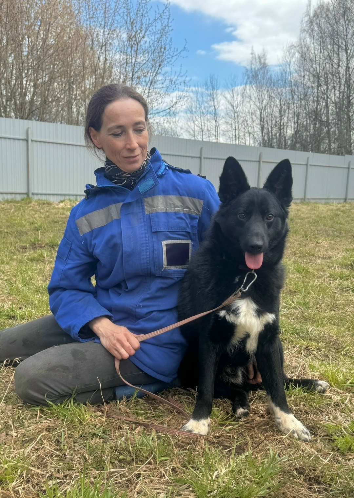
Он, как плюшевая игрушечка, такая аккуратная и невероятно красивая, ладненькая и складненькая. Характер Джаю достался весёлый, взгляд выразительный. Джай любит абсолютно всех. За обнимашки с волонтёрами готов отдать душу. Быстр, как ветер, ласковый и добродушный. Столько всего сочетается в этой относительно небольшой по размеру собачке.
Узнать о Джае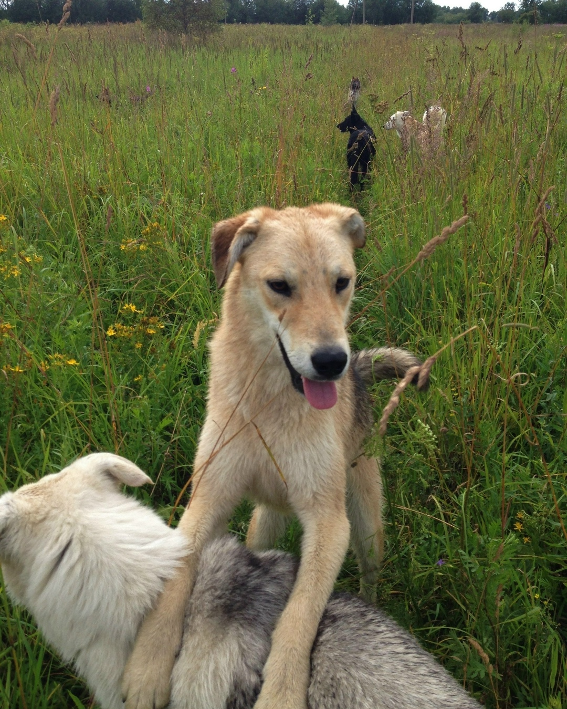
Уже больше года три сестрёнки живут в приюте. Из маленьких миленьких щеночков выросли довольно-таки здоровенные девицы. Они так похожи друг на друга, но постепенно у каждой появляются свои отличительные черты. Киара — скромная трусишка, такая доверчивая и беззащитная, ей обязательно нужна поддержка сестёр или человека. Присмотритесь к этой девочке в золотистой шубке, может, это вы тот самый защитник и друг.
Узнать о Киаре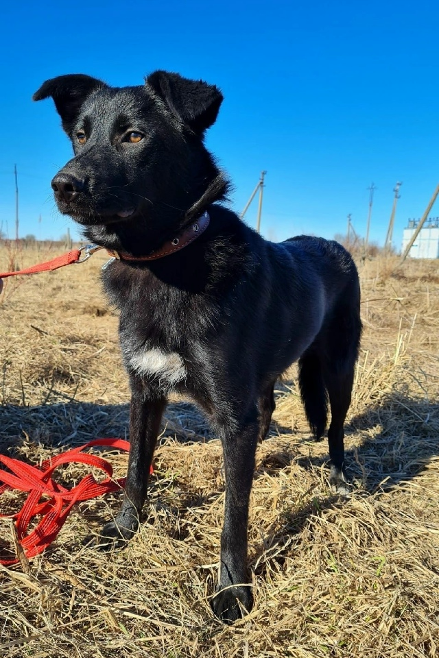
Зафиру 3 года. Он уже взрослый, и вид у него достаточно представительный. Пёс рослый, длиннолапый, стройный. Зафир скромный, тихий и ненавязчивый пёс. Недоверчив к незнакомым людям, осторожен, но со своими ласковый и послушный. Как и любая молодая собака, любит активно гулять, бегать, играть с сородичами. Очень ищет любящих мам и пап. Подойдёт для квартирного или уличного содержания.
Узнать о Зафире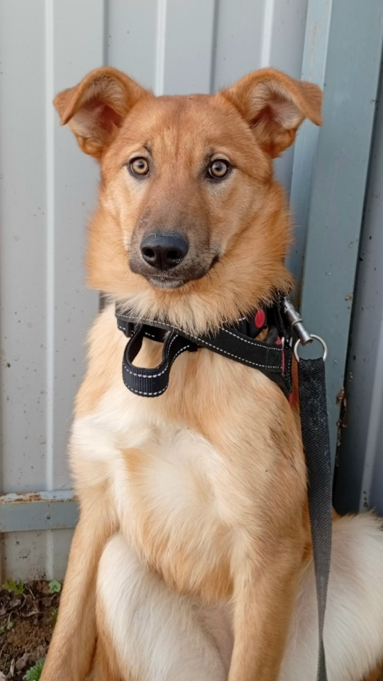
При виде этой красотки вы точно будете в восхищении. Такая она изящная, такая яркая, с такими утончёнными чертами. Но пока наладить контакт с этой недотрогой не так просто. Венера приехала к нам в компании своих братишек и сестрёнок с кладбища. Мы верим — наступит тот час, когда Венера гордо и самостоятельно выйдет из вольера и будет бегать и играть со своими приютскими друзьями, ничего не боясь. И, может быть, найдётся тот человек, который захочет подарить этой лисичке дом.
Узнать о Венере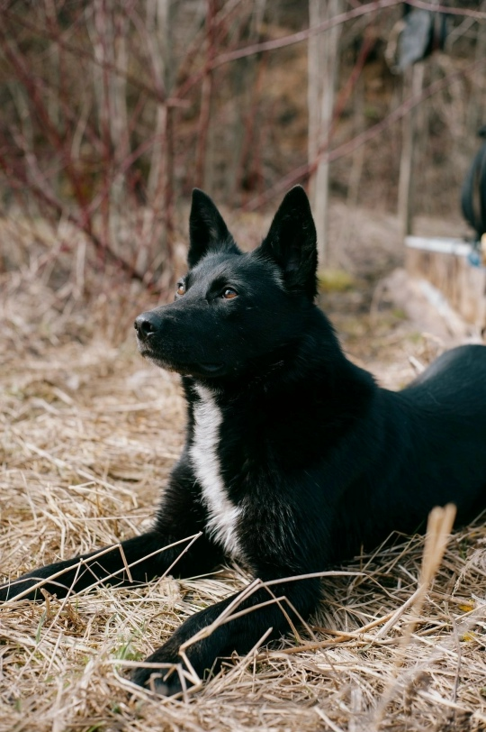
Янга обладает мягким характером. Щенком была совсем дикаркой — эти повадки ушли, но к незнакомым всё ещё относится настороженно. Совершенно неконфликтна. Хорошо ходит на поводке. Совсем молодая, здоровая. Немного осторожная, но зато как приятно будет отмечать её успехи в новом доме! Несмотря на небольшой страх людей, она никогда не проявит агрессию. Чтобы полюбить эту собаку, нужно дать ей время на адаптацию.
Узнать о ЯнгеЭтот большой и красивый мальчик, на самом деле, был большим трусишкой. И несмотря на то, что он был самым большим в помёте, боялся он тоже больше всех. Но время идёт, любовь и забота волонтёров потихоньку дают плоды. Он уже не прячет свою голову в «песок», а с любопытством наблюдает за окружающими. Парень растёт — и становится таким неотразимым! Мы верим, что скоро наш Штраус перестанет бояться совсем и станет самым смелым мальчиком.
Узнать о ШтраусеДонночка — это не просто собака, а очень преданный друг. На прогулках она всегда быстрее ветра. Но при первом зове она пулей летит обратно. Послушная, очень умная девочка. И очень ласковая: прижимается к руке человека и подставляет свою головушку для поглаживаний. А ещё она очень обнимательная — да-да, для неё очень важны эти обнимашки с человеком.
Узнать о ДоннеФокс не молод, но по нему не скажешь. Очень активный, полный желания жить. Да, изменились обстоятельства — вернули в приют, но Фокс решил не унывать и берёт от новой жизни всё предлагаемое. Фокс послушный, только свистни — тут же примчится на зов. Знает команды. Мы стараемся обеспечить хорошее содержание всем жителям приюта, но домашняя жизнь — это домашняя жизнь. Фокс ещё может послужить своим новым хозяевам, в нём достаточно сил и энергии.
Узнать о ФоксеДо сих пор, в свои 6 лет, он как маленький щенок, только взгляд с каждой неделей становится всё печальнее, а мордочка седее. Лёгкий, как пушинка, застенчивый, как страус. Приходят, показывают пальцем, а Лис уже забился в угол будки. Ищем ЧЕЛОВЕКА для Лиса, который сейчас посмотрел его историю, посмотрел в его глаза и захотел поделиться с этим робким мальчишкой не только временем, но и желанием помочь.
Узнать о ЛисеУ Лисмы всегда хорошее настроение, которым она щедро делится со всеми вокруг. Глядя на её хитрую мордочку, невозможно не улыбнуться. Лисма очень любит веселиться, она чемпион по хорошему настроению, всегда весёлая и неунывающая. Это такой сгусток энергии, затягивающий в свой круговорот движения, что невольно начинаешь улыбаться, ноги сами идут быстрее, а руки тянутся обнять эту непоседу.
Узнать о ЛисмеСогласитесь, Синтия — очень красивая собака. Но за 6 лет не было ни одного звонка. А собака ведь чудесная. Спокойная, ласковая, беззаботная. Невысокая. Очень-очень дружелюбная к другим собакам. В прошлом была трусишкой — сейчас уже просто немного скромняга. Отлично ходит на поводке, радуется прогулкам и общению. Очень она долго ждёт того самого звонка, того самого гостя, того самого последнего дня в приюте.
Узнать о Синтии